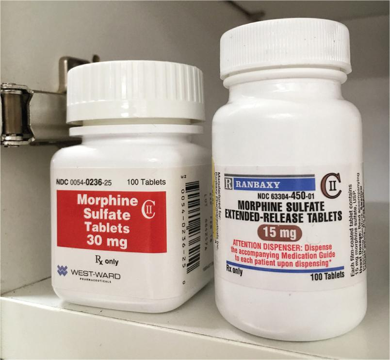
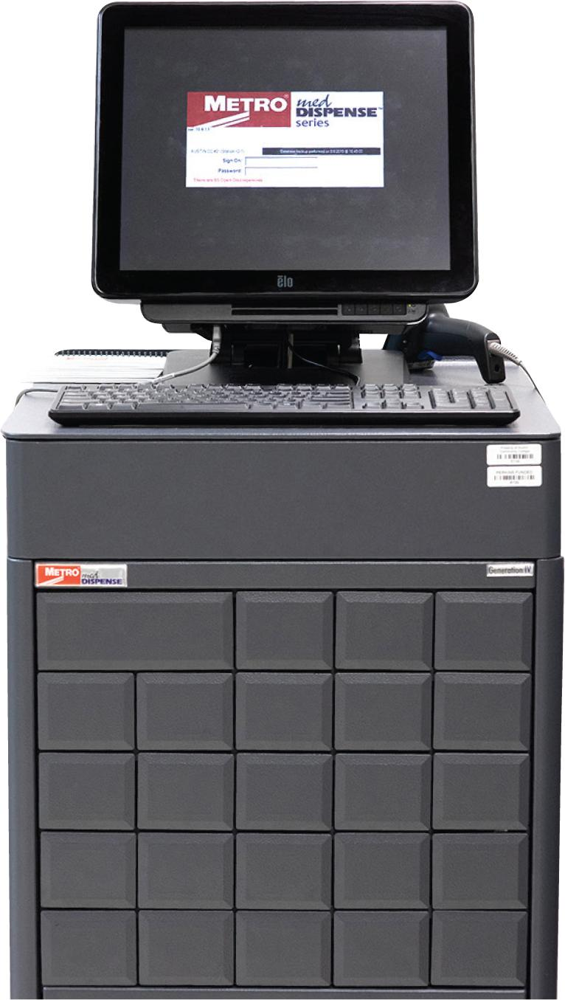
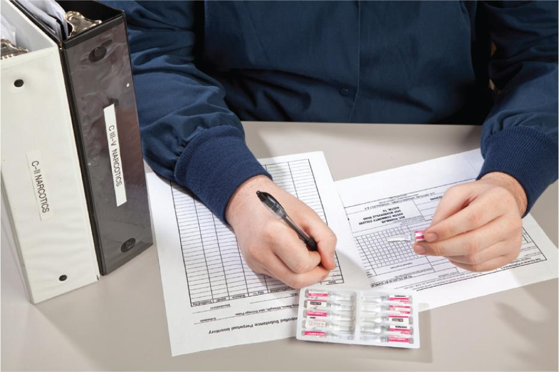
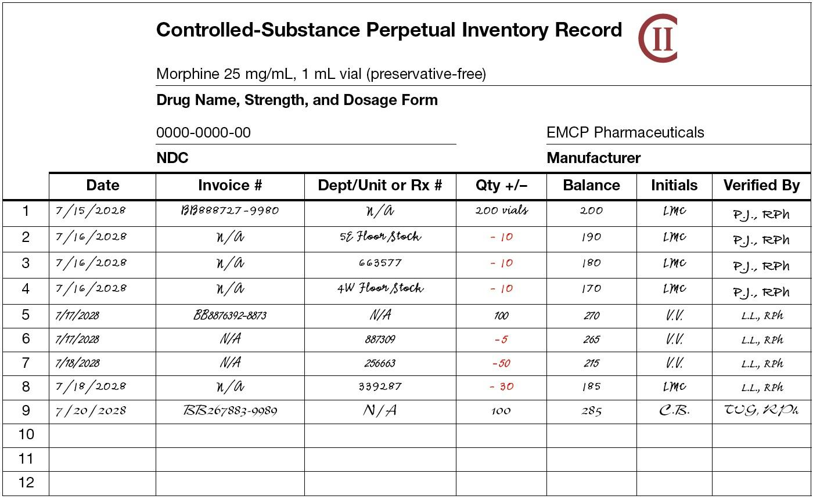
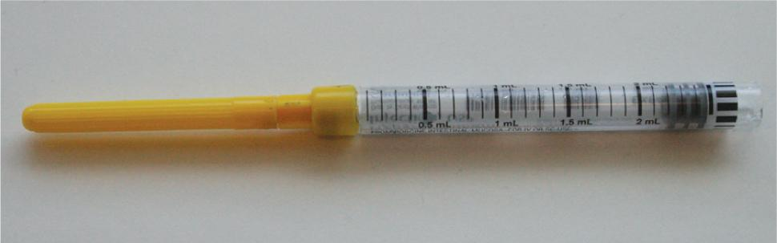
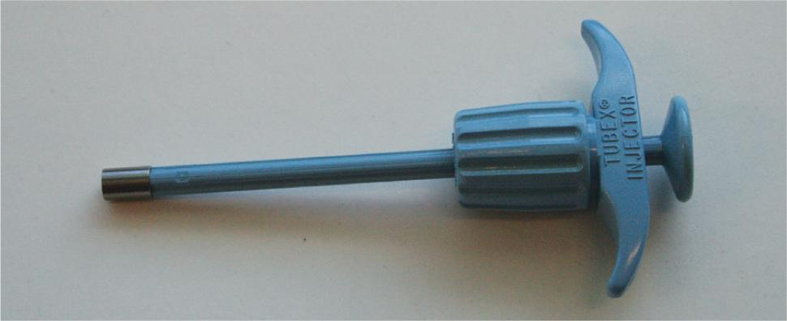
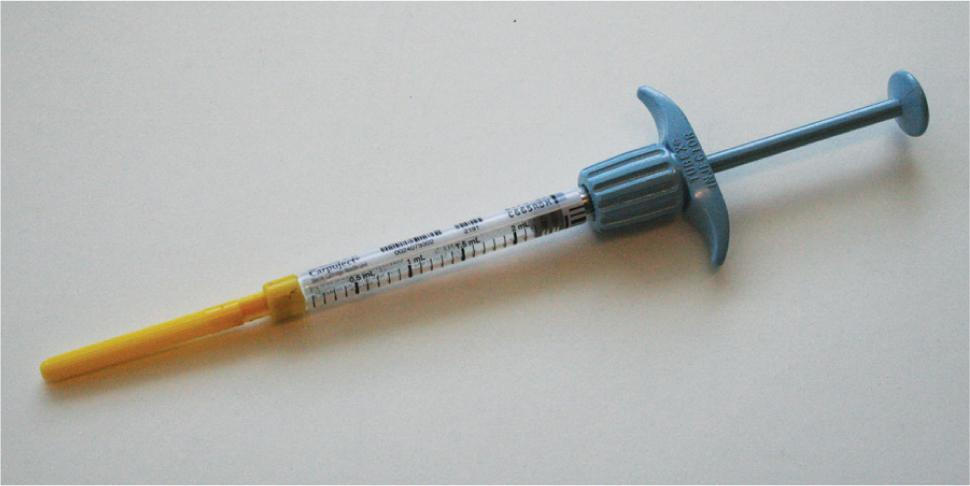

PART 1: CONCEPTS
Controlled substances are medications that have powerful physical and psychological effects on the human body and, therefore, have the potential for abuse and addiction. For that reason, these substances are regulated by federal and state laws and can only be dispensed by a licensed prescriber or pharmacy registered with the US Drug Enforcement Administration (DEA). Although narcotics are often associated with the term controlled substances, these medications are not the only member of this classification. Some stimulants, steroids, hallucinogens, and antianxiety agents are also considered controlled substances.

Sterile compounding personnel prepare controlled-substance compounded sterile preparations (CSPs). These CSPs include preparations used for chronic, severe pain control such as epidural cassettes and patient-controlled analgesia. This chapter discusses the preparation of a narcotic analgesic CSP administered via a patient-controlled syringe pump. However, prior to learning about the sterile compounding process for this narcotic medication, personnel must be familiar with the regulations surrounding the storage, record keeping, and disposal of controlled substances.
13.2 Controlled Substances
The Controlled Substances Act (CSA) organized controlled substances into five drug schedules or classifications based on their potential for abuse or addiction. These drug schedules, including examples that fall into each classification, are outlined in Table 13.1. The CSA also established the criteria for each of the drug schedules. The set of criteria for each schedule is based on the drug’s potential for abuse and addiction.
The manufacturers of these controlled substances must label their products Class I (C–I) through Class V (C–V). The most commonly prescribed controlled substances fall into the Class II (C–II) category. Most controlled-substance CSPs prepared by sterile compounding personnel are comprised of an opioid-based, C–II narcotic analgesic mixed with a base solution such as preservative-free normal saline (PF NS).
| Schedule | Manufacturer’s Label Stamp | Abuse/Addiction Potential | Examples |
|---|---|---|---|
| I | Highest potential for abuse; no currently accepted medical use in treatment in the United States | Ecstasy, heroin, LSD, marijuana, methamphetamine, PCP | |
| II | High potential for abuse; may lead to severe physical or psychological dependence or addiction | Cocaine; codeine; fentanyl; hydrocodone; hydrocodone combination products (hydrocodone combined with acetaminophen, aspirin, or ibuprofen); hydromorphone; levorphanol; meperidine; methadone; methylphenidate; morphine; oxycodone; oxycontin; racemorphan; remifentanil | |
| III | Less potential for abuse or addiction than C–II | Buprenorphine; buprenorphine and naloxone (Suboxone); codeine (when combined with acetaminophen, aspirin, or ibuprofen); ketamine | |
| IV | Less potential for abuse or addiction than C–III | Diazepam, lorazepam, midazolam, phenobarbital, temazepam, tramadol, zolpidem | |
| V | Lowest potential for abuse or addiction | Liquid (p.o.) codeine or opium-based preparations combined with nonnarcotic analgesic, antitussive, or antidiarrheal ingredients | |
| * Information for Table 13.1 can be found in the DEA Regulations, 21 C.F.R. Sections 1308.11 through 1308.15. | |||
The enforcement of the CSA falls to the DEA. This agency determines which drugs move into and out of the various schedules by reviewing a number of factors (see Table 13.2).
In addition to these federal regulations enforced by the DEA, each state has its own laws and regulations regarding the prescribing and dispensing of controlled substances. A facility’s standard operating procedures (SOPs) may also set additional requirements as to the handling of controlled substances. Occasionally, a state law or facility procedure is somewhat different from a federal CSA regulation. In pharmacy practice, whenever two laws conflict, pharmacy personnel must follow whichever law is more stringent.
Controlled-Substance Storage
Controlled substances carry various levels of risk with regard to their potential for drug abuse and controlled-substance diversion, or narcotic diversion. Proper controlled-substance storage, which varies with state law, is essential in mitigating these risks. In some institutional settings, controlled substances within the pharmacy are kept in a narcotic room under a double-lock system. In larger institutions, a specially trained pharmacy technician, known as a narcotic technician, or a pharmacist is typically responsible for operation of the narcotic room (also referred to as the narcotic vault, vault, narcotic cabinet, cabinet, or controlled-substance room). Smaller institutions may defer responsibility for all controlled-substance prescriptions to pharmacists and have pharmacy technicians work with narcotic analgesics only on an as-needed basis or in special situations, such as when compounding controlled-substance CSPs. Despite these differences, institutional pharmacies generally track controlled substances using a perpetual inventory system.
The DEA considers the following factors when classifying a controlled substance:
|
| * Information for Table 13.2 can be found in the Controlled Substances Act, 21 USC Section 811, Authority and Criteria for Classification of Substances. |
Controlled-Substance Record Keeping
Proper controlled-substance record keeping is critical for reducing the possibility of drug abuse and controlled-substance diversion. Personnel responsible for handling controlled substances typically receive specialized, on-the-job training.
In many facilities, controlled-substance record keeping is accomplished using an automated system that incorporates bar-code technology to track all controlled-substance inventory. Although this type of automated record-keeping system is commonly used among institutional pharmacies, small or rural facilities may still use a manually recorded perpetual inventory record. Regardless of the workplace setting, all pharmacy personnel should know how to maintain a perpetual inventory record in the event of a power outage.

Perpetual Inventory Log Book
The perpetual inventory log book is an official compilation of paper records used to track controlled substances. This log book contains a separate page for each strength and dosage form of every controlled substance used in pharmacy practice. Each page (sometimes referred to as a sheet, record, or log) is titled “Perpetual Inventory Record” or “Controlled-Substance Perpetual Inventory Record” (see Table 13.3).

A controlled-substance perpetual inventory record is kept in the controlled-substance storage area and contains a record of all activity relating to controlled substances. Every medication dosage form (capsule, tablet, syringe, dose cup, patch, suppository, vial, ampule, or—as in the case of bulk bottles of liquids—milliliters), every medication strength (often indicated by the number of milligrams per dose [10 mg tablet, 500 mg capsule, 2 mg prefilled syringe, or 250 mg vial]), and every controlled substance brought into the controlled-substance storage area (such as when new stock is received from a drug wholesaler) must be added to a corresponding controlled-substance record that is maintained within the perpetual inventory log book.

In addition, every controlled substance that leaves the controlled-substance storage area—for example, to fill floor stock, prepare an epidural cassette, or compound a patient-controlled analgesia (PCA) syringe—must be signed out from the perpetual inventory record.



Maintenance of a Perpetual Inventory Record
Sterile compounding personnel must sign out a controlled substance to compound a narcotic analgesic CSP. Consequently, personnel must have a good understanding of this manual record-keeping process and exercise diligence and accuracy in maintaining the perpetual inventory record. The first step in the sign-out process is choosing the correct perpetual inventory log book. In general, there is one perpetual inventory log book for C–II controlled substances and a different log book for C–III through C–V controlled substances. The next step, referred to as the controlled-substance sign-out, follows an established protocol outlined in Table 13.4. In some facilities, pharmacy personnel record an entry or an addition to the record in black ink and a withdrawal or a negative balance (within the “Qty +/–” column only) in red ink.
Error Correction in a Perpetual Inventory Record
Pharmacy personnel should never erase, scribble over, or use correcting tape or fluid to cover transcription errors in a perpetual inventory record. Instead, personnel should note an error by drawing a single line through the entire entry and placing their initials and date next to the text with the strike-through line. Following this error-correction process is critical, for the perpetual inventory record is an official document that may be reviewed by agencies such as a state board of pharmacy and the DEA.
Controlled-Substance Security
To provide the utmost security, sterile compounding personnel should always ensure that controlled substances, the keys to the controlled-substance storage area, and all controlled-substance records are kept in their charge while working in the controlled-substance storage area, working with perpetual inventory records, and compounding controlled-substance preparations. If personnel discover a discrepancy within the perpetual inventory record, they must report the problem immediately. Should a controlled-substance discrepancy occur, it should be reported to a direct supervisor, or other person in authority. Refer to facility SOPs for specific instructions.
| The following steps demonstrate a sample procedure for completing a perpetual inventory record. In this scenario, a sterile compounding technician is obtaining a narcotic analgesic needed to prepare a controlled-substance CSP. |
|
| Note: Refer to Lab 23 of Pharmacy Labs for Technicians, Fourth Edition, by Jason Philip Sparks, Lisa McCartney, Nicole Barriera, and Wendy Lubin for in-depth, step-by-step instruction regarding controlled-substance record keeping. |
Controlled-Substance Disposal
To prevent controlled-substance diversion, all related waste procedures must be recorded in the perpetual inventory record and must be observed by a controlled-substance waste witness. Sterile compounding personnel must check their facility’s SOPs for guidance on the proper disposal of controlled substances.